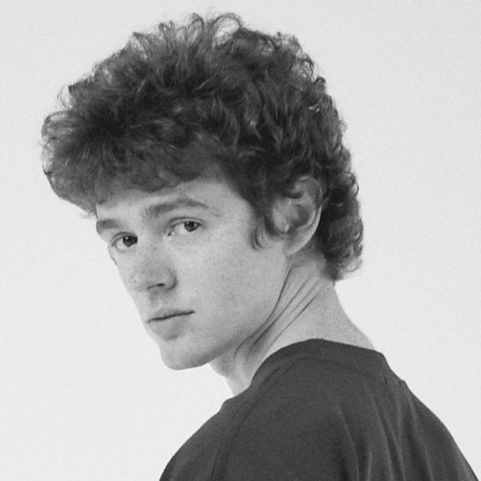

Илья Милошевич, разработчик интерфейсов

mech.moscow, лето 2021
Работа
-
Альфа-банк
- Работал над задачами малого бизнеса
- Разработывал и поддерживал внутреннюю CMS
-
Внедрил и масштабировал подход для создания
пошаговых форм
-
Кредитный калькулятор
-
Лидил в команде: формировал бэклог задач, принимал архитектурные
решения, следил за эффективностью и ростом разработчиков
-
ЛитРес
-
Переводил
Литрес:читалку
на API
CataLit2
и формат электронных книг
FB3
-
Разработал
карту
филиалов библиотек для Литрес:Блиблиотеки
-
Перед уходом работал над дизайн-системой и подготавливал новый
проект для правообладателей на современном стеке: webpack, React,
Redux, css modules
-
Также: во время учебы работал на компанию, среди клиентов которой были
градостроительный университет и Аэрофлот. Из интересного: внедрил
векторные карты Mapbox GL и внес небольшой
контрибьют
в их векторный редактор